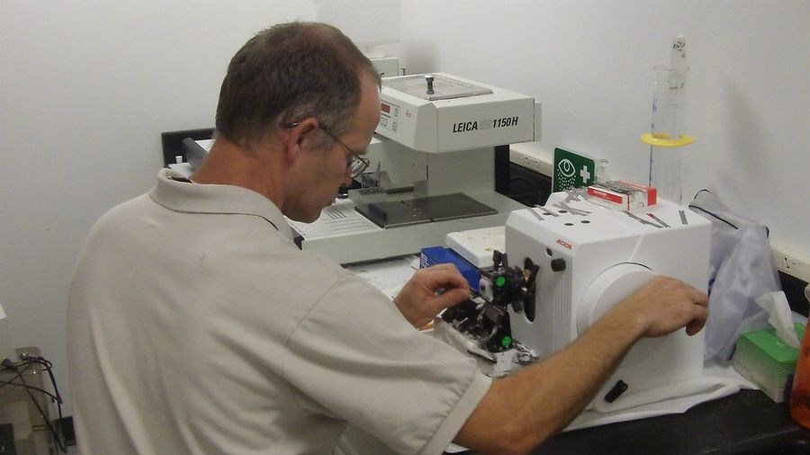

5トライのアイルランド、秋の最終戦でオーストラリアに勝利Five-try Ireland beat Australia in autumn finaleアイルランドはロンドンで行われたオーストラリア戦に38-14で勝利し、初開催のネーションズ・チャンピオンシップで5位を確定させた。
5トライのアイルランド、秋の最終戦でオーストラリアに勝利Five-try Ireland beat Australia in autumn finaleアイルランドはロンドンで行われたオーストラリア戦に38-14で勝利し、初開催のネーションズ・チャンピオンシップで5位を確定させた。 サウサンプトンでスパイゲートの緊張が噴出、フィン・アザズの泣きまねセレブレーションがボロを激怒させるSpygate tensions erupt at Southampton after Finn Azaz’s cry-baby celebration riles Boroフィン・アザズがピッチを縦断して走り、ミドルズブラのサポーターの前で泣くふりをしながら泣きまねのセレブレーションを披露して挑発したとき
サウサンプトンでスパイゲートの緊張が噴出、フィン・アザズの泣きまねセレブレーションがボロを激怒させるSpygate tensions erupt at Southampton after Finn Azaz’s cry-baby celebration riles Boroフィン・アザズがピッチを縦断して走り、ミドルズブラのサポーターの前で泣くふりをしながら泣きまねのセレブレーションを披露して挑発したとき ギブズ＝ホワイトとイゴール・ジェズスが活躍し、ノッティンガム・フォレストが不安定なチェルシーに勝利Gibbs-White and Igor Jesus fire Nottingham Forest past shaky Chelseaウェズレイ・フォファナは元レスター・シティの選手として、喜ぶノッティンガム・フォレストのファンから厳しい扱いを受けることを予想していたかもしれない。しかし、1週間の終わりに
ギブズ＝ホワイトとイゴール・ジェズスが活躍し、ノッティンガム・フォレストが不安定なチェルシーに勝利Gibbs-White and Igor Jesus fire Nottingham Forest past shaky Chelseaウェズレイ・フォファナは元レスター・シティの選手として、喜ぶノッティンガム・フォレストのファンから厳しい扱いを受けることを予想していたかもしれない。しかし、1週間の終わりに 極端な富の爆発的拡大は現代の最大の問題である｜バーニー・サンダースThe explosion of extreme wealth is the major problem of our time | Bernie Sandersアメリカの歴史におけるこの重要な局面で、強力で貪欲で腐敗した支配階級に立ち向かい、打ち破るために共に前進しよう。私たちは重要な岐路に
極端な富の爆発的拡大は現代の最大の問題である｜バーニー・サンダースThe explosion of extreme wealth is the major problem of our time | Bernie Sandersアメリカの歴史におけるこの重要な局面で、強力で貪欲で腐敗した支配階級に立ち向かい、打ち破るために共に前進しよう。私たちは重要な岐路に 検察、「毒物販売者」ケネス・ローに懲役25年を求刑Prosecutors seek 25-year prison term for 'poison seller' Kenneth Law今年に入って自殺幇助の14件の罪を認めたこのカナダ人男性は、後日、判決が言い渡される予定だ。
検察、「毒物販売者」ケネス・ローに懲役25年を求刑Prosecutors seek 25-year prison term for 'poison seller' Kenneth Law今年に入って自殺幇助の14件の罪を認めたこのカナダ人男性は、後日、判決が言い渡される予定だ。 ストリクトリーのスターのキャリアを変えた小さなウェールズの町The little Welsh town that transformed a Strictly star's careerレイトン・ウィリアムズは、ウェールズの小さな町で生活し働いたことが自分のキャリアを変えたと語っている。
ストリクトリーのスターのキャリアを変えた小さなウェールズの町The little Welsh town that transformed a Strictly star's careerレイトン・ウィリアムズは、ウェールズの小さな町で生活し働いたことが自分のキャリアを変えたと語っている。 ウェールズ公妃のドキュメンタリー『Heal』、がん治療後の「巡礼」をたどるPrincess of Wales documentary Heal charts ‘pilgrimage’ after cancer treatmentBBCの作品は、化学療法後の人生がどのようなものになり得るかを探るため、スリー・ピークス・チャレンジに挑むキャサリン妃を追う。ウェールズ公妃がその挑戦に臨んだ日
ウェールズ公妃のドキュメンタリー『Heal』、がん治療後の「巡礼」をたどるPrincess of Wales documentary Heal charts ‘pilgrimage’ after cancer treatmentBBCの作品は、化学療法後の人生がどのようなものになり得るかを探るため、スリー・ピークス・チャレンジに挑むキャサリン妃を追う。ウェールズ公妃がその挑戦に臨んだ日 ギブズ＝ホワイトが活躍、フォファナは苦戦 ― フォレスト対チェルシーの選手採点Gibbs-White stars, Fofana struggles - player ratings for Forest v Chelseaモーガン・ギブズ＝ホワイトが2得点を挙げ、ノッティンガム・フォレストはシティ・グラウンドで1997年以来初めてチェルシーを3-2で破った。
ギブズ＝ホワイトが活躍、フォファナは苦戦 ― フォレスト対チェルシーの選手採点Gibbs-White stars, Fofana struggles - player ratings for Forest v Chelseaモーガン・ギブズ＝ホワイトが2得点を挙げ、ノッティンガム・フォレストはシティ・グラウンドで1997年以来初めてチェルシーを3-2で破った。 セルティック、グリーン・ブリゲードをめぐる騒動の中で警備責任者を擁護Celtic defend head of security amid Green Brigade rowセルティックは、警備責任者のマーク・ハーグリーブス氏と、昨シーズンにグリーン・ブリゲードに対して取られた措置を擁護している。
セルティック、グリーン・ブリゲードをめぐる騒動の中で警備責任者を擁護Celtic defend head of security amid Green Brigade rowセルティックは、警備責任者のマーク・ハーグリーブス氏と、昨シーズンにグリーン・ブリゲードに対して取られた措置を擁護している。 「ここでは歓迎されない」 ― チェルシーのフォファナ、自軍ファンからブーイング'You're not welcome here' - Chelsea's Fofana booed by own fansチェルシーのディフェンダー、ウェズレイ・フォファナは、物議を醸したインタビューの後、ノッティンガム・フォレスト戦でのプレミアリーグ敗戦中に自軍ファンからブーイングを受けた。
「ここでは歓迎されない」 ― チェルシーのフォファナ、自軍ファンからブーイング'You're not welcome here' - Chelsea's Fofana booed by own fansチェルシーのディフェンダー、ウェズレイ・フォファナは、物議を醸したインタビューの後、ノッティンガム・フォレスト戦でのプレミアリーグ敗戦中に自軍ファンからブーイングを受けた。 高齢の「スクルージ」、電動スクーターで乗り付け隣家のクリスマスライトを切断Elderly ‘Scrooge’ severs neighbour’s Christmas lights in mobility-scooter raid防犯カメラには、身元不明の女性がミドルズブラの住宅の祝祭用飾りにはさみを入れる様子が映っていた。高齢の女性が、善意の季節に背く行為をしたとして非難されている
高齢の「スクルージ」、電動スクーターで乗り付け隣家のクリスマスライトを切断Elderly ‘Scrooge’ severs neighbour’s Christmas lights in mobility-scooter raid防犯カメラには、身元不明の女性がミドルズブラの住宅の祝祭用飾りにはさみを入れる様子が映っていた。高齢の女性が、善意の季節に背く行為をしたとして非難されている チャンピオンズリーグ出場権がパス移籍の鍵に――土曜日のゴシップChampions League to be a factor in Paz move - Saturday's gossipマンチェスター・ユナイテッドは、チャンピオンズリーグ出場権を得られなければニコ・パス獲得の機会を失う可能性があり、アーセナルもコモのミッドフィールダーを狙っており、リバプールはラミン・カ…に注目している。
チャンピオンズリーグ出場権がパス移籍の鍵に――土曜日のゴシップChampions League to be a factor in Paz move - Saturday's gossipマンチェスター・ユナイテッドは、チャンピオンズリーグ出場権を得られなければニコ・パス獲得の機会を失う可能性があり、アーセナルもコモのミッドフィールダーを狙っており、リバプールはラミン・カ…に注目している。 アイルランド対オーストラリア：ネーションズ・チャンピオンシップ決勝週末—ライブIreland v Australia: Nations Championship finals weekend – liveネーションズ・チャンピオンシップの最新情報。午後8時10分（GMT）キックオフ TikTok | ザ・ブレークダウンに登録 | リーにメール 4分 アイルランドが自陣10mラインで反則を犯し、トーマスが時間を無駄にしない
アイルランド対オーストラリア：ネーションズ・チャンピオンシップ決勝週末—ライブIreland v Australia: Nations Championship finals weekend – liveネーションズ・チャンピオンシップの最新情報。午後8時10分（GMT）キックオフ TikTok | ザ・ブレークダウンに登録 | リーにメール 4分 アイルランドが自陣10mラインで反則を犯し、トーマスが時間を無駄にしない ノッティンガム・フォレスト対チェルシー：プレミアリーグ—ライブNottingham Forest v Chelsea: Premier League – live⚽ シティ・グラウンドでの金曜夜のキックオフの最新情報 ⚽ 日程 | 順位表 | フットボール・デイリーに登録 | スコットにメール フォレストが試合を開始した。今後予想されること
ノッティンガム・フォレスト対チェルシー：プレミアリーグ—ライブNottingham Forest v Chelsea: Premier League – live⚽ シティ・グラウンドでの金曜夜のキックオフの最新情報 ⚽ 日程 | 順位表 | フットボール・デイリーに登録 | スコットにメール フォレストが試合を開始した。今後予想されること スペイン首相とライバルら、投票を呼びかける最後の訴えで支持者を結集Spanish PM and rivals rally supporters in final pitch for votesペドロ・サンチェス首相は世論調査の予想に反することを望んでおり、主要なライバルらは同首相が真実を語らず、「裏切り」を犯したと非難している。
スペイン首相とライバルら、投票を呼びかける最後の訴えで支持者を結集Spanish PM and rivals rally supporters in final pitch for votesペドロ・サンチェス首相は世論調査の予想に反することを望んでおり、主要なライバルらは同首相が真実を語らず、「裏切り」を犯したと非難している。 「サイバーインシデント」の後、数百万人が給付金・年金サービスを利用できなくなるMillions lose access to benefits and pensions services after 'cyber incident'労働・年金省は、予防措置として一部のサービスをオフラインにしたと述べている。
「サイバーインシデント」の後、数百万人が給付金・年金サービスを利用できなくなるMillions lose access to benefits and pensions services after 'cyber incident'労働・年金省は、予防措置として一部のサービスをオフラインにしたと述べている。 7,000トンのディーゼルを積んだ転覆タンカー、イビサ島から曳航へCapsized tanker carrying 7,000 tonnes of diesel to be towed away from Ibizaイビサ島沖での大規模な油流出が懸念されているが、これまでのところ船の燃料タンクは無傷だ。
7,000トンのディーゼルを積んだ転覆タンカー、イビサ島から曳航へCapsized tanker carrying 7,000 tonnes of diesel to be towed away from Ibizaイビサ島沖での大規模な油流出が懸念されているが、これまでのところ船の燃料タンクは無傷だ。 ジェリー・ジョーンズ氏、カウボーイズの最新の崩壊を受け「痛烈な挫折」を批判Jerry Jones hits out at Cowboys’ ‘damning setbacks’ after latest meltdownイーグルスに39対38で敗れた後も、オーナーはヘッドコーチを依然として支持している。ブライアン・ショッテンハイマー氏はホームでの記録的な連敗を招いた。ファルコンズはミネソタでの試合に向け5選手を欠場と判断した
ジェリー・ジョーンズ氏、カウボーイズの最新の崩壊を受け「痛烈な挫折」を批判Jerry Jones hits out at Cowboys’ ‘damning setbacks’ after latest meltdownイーグルスに39対38で敗れた後も、オーナーはヘッドコーチを依然として支持している。ブライアン・ショッテンハイマー氏はホームでの記録的な連敗を招いた。ファルコンズはミネソタでの試合に向け5選手を欠場と判断した 「カナダ人に対する虐待的で侮辱的な」：米国大使の追放を求める運動が議会に提出‘Abusive and insulting to Canadians’: campaign to oust US ambassador presented to parliament数十万人のカナダ人が、ピート・フックストラ氏を「ペルソナ・ノン・グラータ」に宣言するよう求めている。約29万人のカナダ人が署名した請願は、マーク・カーニー氏に呼びかけている。
「カナダ人に対する虐待的で侮辱的な」：米国大使の追放を求める運動が議会に提出‘Abusive and insulting to Canadians’: campaign to oust US ambassador presented to parliament数十万人のカナダ人が、ピート・フックストラ氏を「ペルソナ・ノン・グラータ」に宣言するよう求めている。約29万人のカナダ人が署名した請願は、マーク・カーニー氏に呼びかけている。 米国のブラックフライデーセールを追跡し、2026年の最高のセール150件以上を見つけるWe’re tracking US Black Friday sales to find the 150+ very best 2026 dealsブラックフライデーには無数のセールがあるが、編集部はあなたの時間を費やす価値のあるごく少数に絞り込んだ。最高のブラックフライデーのストリーミングセール…
米国のブラックフライデーセールを追跡し、2026年の最高のセール150件以上を見つけるWe’re tracking US Black Friday sales to find the 150+ very best 2026 dealsブラックフライデーには無数のセールがあるが、編集部はあなたの時間を費やす価値のあるごく少数に絞り込んだ。最高のブラックフライデーのストリーミングセール… 一生使い続けられる耐久性の高い製品の確実なブラックフライデーセール21件を見つけたWe found 21 ironclad Black Friday deals on durable products you’ll own for life安物は買わないで。私たちは、今後何度も迎える感謝祭でもまだ現役でいられる投資級の製品のブラックフライデーセールを見つけた。お気に入りのバスタオル…
一生使い続けられる耐久性の高い製品の確実なブラックフライデーセール21件を見つけたWe found 21 ironclad Black Friday deals on durable products you’ll own for life安物は買わないで。私たちは、今後何度も迎える感謝祭でもまだ現役でいられる投資級の製品のブラックフライデーセールを見つけた。お気に入りのバスタオル… バイデン氏の回顧録の売り上げ、オバマ氏とクリントン氏の著書に大きく及ばずSales for Biden memoir fall far short of books by Obama and Clinton批評家から冷ややかな評価を受けた『プロミス・ミー、アメリカ』は、発売初週に約2万1000部を売り上げた。ジョー・バイデンの回顧録『プロミス・ミー、アメリカ』は…
バイデン氏の回顧録の売り上げ、オバマ氏とクリントン氏の著書に大きく及ばずSales for Biden memoir fall far short of books by Obama and Clinton批評家から冷ややかな評価を受けた『プロミス・ミー、アメリカ』は、発売初週に約2万1000部を売り上げた。ジョー・バイデンの回顧録『プロミス・ミー、アメリカ』は… NHSグランピアン、病院スキャンダルの中心にある流出報告書を公表NHS Grampian publishes leaked report at centre of hospital scandal報告書は先週、NHSグランピアンに法人過失致死の調査を受けるよう求めた外科医によって流出していた。
NHSグランピアン、病院スキャンダルの中心にある流出報告書を公表NHS Grampian publishes leaked report at centre of hospital scandal報告書は先週、NHSグランピアンに法人過失致死の調査を受けるよう求めた外科医によって流出していた。 「そんなに簡単に諦めるわけにはいかなかった」：感謝祭パレードの日程変更を受け、マーチングバンドが費用の捻出に奔走'We couldn't give up that easily': Marching bands scramble to cover costs after Thanksgiving parade rearrangedニューヨーク市の荒天により、主催者はメイシーズのパレードを2日延期せざるを得なくなり、一部の音楽家たちが立ち往生した。
「そんなに簡単に諦めるわけにはいかなかった」：感謝祭パレードの日程変更を受け、マーチングバンドが費用の捻出に奔走'We couldn't give up that easily': Marching bands scramble to cover costs after Thanksgiving parade rearrangedニューヨーク市の荒天により、主催者はメイシーズのパレードを2日延期せざるを得なくなり、一部の音楽家たちが立ち往生した。 アラン・ウィン・ジョーンズ氏、植毛手術後に男性に薄毛について語るよう呼びかけAlun Wyn Jones urges men to talk about hair loss after transplant元ウェールズ代表キャプテンは、より多くの男性に薄毛について率直に語るよう促したいと述べた。
アラン・ウィン・ジョーンズ氏、植毛手術後に男性に薄毛について語るよう呼びかけAlun Wyn Jones urges men to talk about hair loss after transplant元ウェールズ代表キャプテンは、より多くの男性に薄毛について率直に語るよう促したいと述べた。 なぜエンツォ・マレスカ監督の下でマンチェスター・シティはうまくいかなくなったのか？Why have things started to go wrong for Manchester City under Enzo Maresca?イタリア人監督のセンセーショナルなスタートはすぐに低迷に続き、チームには暗い表情が広がった。これはマンチェスター・シティの連勝における大きな既知の未知数である…
なぜエンツォ・マレスカ監督の下でマンチェスター・シティはうまくいかなくなったのか？Why have things started to go wrong for Manchester City under Enzo Maresca?イタリア人監督のセンセーショナルなスタートはすぐに低迷に続き、チームには暗い表情が広がった。これはマンチェスター・シティの連勝における大きな既知の未知数である… グレアム・ソープ氏の未亡人、検視審問後にNHSトラストを提訴Graham Thorpe’s widow takes legal action against NHS trust after inquest元イングランド代表テストクリケット選手は、2024年に自ら命を絶つ前に不安症とうつ病と診断されていた。元イングランド代表クリケット選手グレアム・ソープ氏の妻は
グレアム・ソープ氏の未亡人、検視審問後にNHSトラストを提訴Graham Thorpe’s widow takes legal action against NHS trust after inquest元イングランド代表テストクリケット選手は、2024年に自ら命を絶つ前に不安症とうつ病と診断されていた。元イングランド代表クリケット選手グレアム・ソープ氏の妻は メルセデスが波乱のカタールGP第2プラクティスで最速Mercedes set pace in eventful Qatar second practiceワールドチャンピオンのキミ・アントネッリが、カタール・グランプリの中断のあった第2プラクティスで、メルセデスのチームメート、ジョージ・ラッセルを抑えて最速タイムを記録した。
メルセデスが波乱のカタールGP第2プラクティスで最速Mercedes set pace in eventful Qatar second practiceワールドチャンピオンのキミ・アントネッリが、カタール・グランプリの中断のあった第2プラクティスで、メルセデスのチームメート、ジョージ・ラッセルを抑えて最速タイムを記録した。 DWPの「サイバー事件」で年金・給付システムのほぼすべてがオフラインにDWP ‘cyber incident’ knocks almost all pensions and benefits systems offline労働・年金省は、障害に関連する詐欺に注意し、緊急の困難がある場合はヘルプラインに連絡するよう人々に呼びかけている。教えてください：あなたは影響を受けましたか。
DWPの「サイバー事件」で年金・給付システムのほぼすべてがオフラインにDWP ‘cyber incident’ knocks almost all pensions and benefits systems offline労働・年金省は、障害に関連する詐欺に注意し、緊急の困難がある場合はヘルプラインに連絡するよう人々に呼びかけている。教えてください：あなたは影響を受けましたか。 ウェールズ、日本戦勝利で歴史的なキャンペーンを締めくくることを目指すWales aim to finish historic campaign with Japan winウェールズは土曜日、トゥイッケナムのアリアンツ・スタジアムで日本との対戦で、ネーションズ・チャンピオンシップのキャンペーンを好調に締めくくることを望んでいる。
ウェールズ、日本戦勝利で歴史的なキャンペーンを締めくくることを目指すWales aim to finish historic campaign with Japan winウェールズは土曜日、トゥイッケナムのアリアンツ・スタジアムで日本との対戦で、ネーションズ・チャンピオンシップのキャンペーンを好調に締めくくることを望んでいる。 新たな衛星データが、アフリカの一部都市がどれほどの速さで沈下しているかを示すNew satellite data shows how fast some African cities are sinkingラゴスやアレクサンドリアを含む都市が、従来考えられていたよりも速く沈下していると、新たな研究が示している。
新たな衛星データが、アフリカの一部都市がどれほどの速さで沈下しているかを示すNew satellite data shows how fast some African cities are sinkingラゴスやアレクサンドリアを含む都市が、従来考えられていたよりも速く沈下していると、新たな研究が示している。 スヌーカーは最も精神的に過酷なスポーツなのか？Is snooker the most mentally challenging sport?ゲイリー・ウィルソン、ケン・ドハーティ、ジェイソン・ファーガソンが、プロのスヌーカー選手への精神的な影響について語る。
スヌーカーは最も精神的に過酷なスポーツなのか？Is snooker the most mentally challenging sport?ゲイリー・ウィルソン、ケン・ドハーティ、ジェイソン・ファーガソンが、プロのスヌーカー選手への精神的な影響について語る。 戦争に疲れながらも譲る気配はなく、キーウはまた厳しい冬に直面するWeary of war but with no sign of backing down, Kyiv faces another punishing winterウクライナは、「すべてはどう終わるのか」という問いが残る中、また壊滅的な冬に備えている。
戦争に疲れながらも譲る気配はなく、キーウはまた厳しい冬に直面するWeary of war but with no sign of backing down, Kyiv faces another punishing winterウクライナは、「すべてはどう終わるのか」という問いが残る中、また壊滅的な冬に備えている。 神々の凋落――オールブラックスが負けるわけにはいかない長期戦Decline of deities - the long game the All Blacks cannot afford to lose統計的には、この世代のオールブラックスは数十年で最も弱い。成功の代名詞だった存在は、なぜここまで凋落したのか。
神々の凋落――オールブラックスが負けるわけにはいかない長期戦Decline of deities - the long game the All Blacks cannot afford to lose統計的には、この世代のオールブラックスは数十年で最も弱い。成功の代名詞だった存在は、なぜここまで凋落したのか。 「当時のフレディ・マーキュリー」と呼ばれた人物が所有していた貴重なパントマイムのプログラムがオークションで売却Rare panto programmes owned by 'Freddie Mercury of his time' sell at auctionヘンリー・パジェットの生涯は、今年初めに公開された伝記映画『Madfabulous』の中心となった。
「当時のフレディ・マーキュリー」と呼ばれた人物が所有していた貴重なパントマイムのプログラムがオークションで売却Rare panto programmes owned by 'Freddie Mercury of his time' sell at auctionヘンリー・パジェットの生涯は、今年初めに公開された伝記映画『Madfabulous』の中心となった。 警察、「未知の物質」で中断されたマンチェスター公演でファンが強盗被害に遭った疑いPolice suspect criminals robbed fans at Manchester gig disrupted by ‘unknown substance’警察は、ドン・トライヴァーの他の2つのコンサートでも同様の事件が起きたことを受け、欧州各地の機関と連携して捜査している。組織的な犯罪グループが関与したとみられている。
警察、「未知の物質」で中断されたマンチェスター公演でファンが強盗被害に遭った疑いPolice suspect criminals robbed fans at Manchester gig disrupted by ‘unknown substance’警察は、ドン・トライヴァーの他の2つのコンサートでも同様の事件が起きたことを受け、欧州各地の機関と連携して捜査している。組織的な犯罪グループが関与したとみられている。 冬がやってくる：暖かく快適に過ごせる、ブラックフライデーの衣料品セールおすすめ19選Winter is coming: 19 best Black Friday clothing deals to keep you warm and cozyすでに寒くなっている。だが、私のように冬の買い物を先延ばししてしまった人には、これらのブラックフライデーのセールが役立つかもしれない。最近は、瞬きしたかと思うと、晩秋の天気が
冬がやってくる：暖かく快適に過ごせる、ブラックフライデーの衣料品セールおすすめ19選Winter is coming: 19 best Black Friday clothing deals to keep you warm and cozyすでに寒くなっている。だが、私のように冬の買い物を先延ばししてしまった人には、これらのブラックフライデーのセールが役立つかもしれない。最近は、瞬きしたかと思うと、晩秋の天気が 『Chicken Shop Date』：完璧な幕引きか、残念な締めくくりか？Chicken Shop Date: The perfect end or a disappointing send-off?アメリア・ディモルデンバーグ氏は、10年以上続いた人気YouTubeシリーズ『Chicken Shop Date』の終了を発表した。
『Chicken Shop Date』：完璧な幕引きか、残念な締めくくりか？Chicken Shop Date: The perfect end or a disappointing send-off?アメリア・ディモルデンバーグ氏は、10年以上続いた人気YouTubeシリーズ『Chicken Shop Date』の終了を発表した。 ゼレンスキー氏、BBCのインタビューでトランプ氏とプーチン氏の「奇妙な」友好関係を批判Zelensky criticises 'strange' Trump-Putin friendship in BBC interviewウクライナ大統領は米国への不満を表明し、戦争終結に向けた和平交渉でロシアに十分な圧力をかけていないと述べた。
ゼレンスキー氏、BBCのインタビューでトランプ氏とプーチン氏の「奇妙な」友好関係を批判Zelensky criticises 'strange' Trump-Putin friendship in BBC interviewウクライナ大統領は米国への不満を表明し、戦争終結に向けた和平交渉でロシアに十分な圧力をかけていないと述べた。 マンチェスター・ユナイテッド、フェルナンデスとの契約を2028年まで延長；ラヤがアーセナルの練習に復帰――その経過Manchester United extend Fernandes’s contract to 2028; Raya back in Arsenal training – as it happened⚽ プレミアリーグとEFLの新たな一節を前に展開したサッカー最新ニュースのすべて。クイズモードを続けよう。サッカーに関するクイズがたくさん
マンチェスター・ユナイテッド、フェルナンデスとの契約を2028年まで延長；ラヤがアーセナルの練習に復帰――その経過Manchester United extend Fernandes’s contract to 2028; Raya back in Arsenal training – as it happened⚽ プレミアリーグとEFLの新たな一節を前に展開したサッカー最新ニュースのすべて。クイズモードを続けよう。サッカーに関するクイズがたくさん The Com：子どもたちに「ぞっとするような脅威」をもたらす世界的なサイバー犯罪ネットワークThe Com: the global cybercrime network posing a ‘chilling threat’ to childrenFBIは、少女のわいせつな画像や恐喝に関連するグループのメンバー、あるいは最近までメンバーだったと自認する人が数千人に上ると推定している。その名は穏やかに聞こえる：The Com、…
The Com：子どもたちに「ぞっとするような脅威」をもたらす世界的なサイバー犯罪ネットワークThe Com: the global cybercrime network posing a ‘chilling threat’ to childrenFBIは、少女のわいせつな画像や恐喝に関連するグループのメンバー、あるいは最近までメンバーだったと自認する人が数千人に上ると推定している。その名は穏やかに聞こえる：The Com、… 少女たちを脅して自傷行為に追い込んだ「計算高い捕食者」に禁錮14年半'Calculating predator' who blackmailed girls into self-harm jailed for 14 and a half yearsボー＝ジャック・メンスフォースは、世界各地で9人の少女を狙った罪で収監された。最年少は12歳だった。
少女たちを脅して自傷行為に追い込んだ「計算高い捕食者」に禁錮14年半'Calculating predator' who blackmailed girls into self-harm jailed for 14 and a half yearsボー＝ジャック・メンスフォースは、世界各地で9人の少女を狙った罪で収監された。最年少は12歳だった。 保守党とブレグジットを描くマーティン・ローソン――漫画Martin Rowson on the Conservatives and Brexit – cartoon続きを読む…
保守党とブレグジットを描くマーティン・ローソン――漫画Martin Rowson on the Conservatives and Brexit – cartoon続きを読む… ヴェルーシュカの訃報Veruschka obituary大胆でダイナミックな撮影で1960年代ファッション界最大のスターの一人となったドイツのモデルでアーティスト。モデル志望だったベラ・フォン・レーンドルフは「ヴェルーシュク
ヴェルーシュカの訃報Veruschka obituary大胆でダイナミックな撮影で1960年代ファッション界最大のスターの一人となったドイツのモデルでアーティスト。モデル志望だったベラ・フォン・レーンドルフは「ヴェルーシュク エメリ監督、ヴィラの選考から外れたガルナチョの姿勢を称賛Emery praises Garnacho attitude after Villa selection snubアストン・ヴィラのウナイ・エメリ監督はアレハンドロ・ガルナチョの「素晴らしい姿勢」を称賛する一方、選考では他の選手が彼より優先されると示唆した。
エメリ監督、ヴィラの選考から外れたガルナチョの姿勢を称賛Emery praises Garnacho attitude after Villa selection snubアストン・ヴィラのウナイ・エメリ監督はアレハンドロ・ガルナチョの「素晴らしい姿勢」を称賛する一方、選考では他の選手が彼より優先されると示唆した。 『GTA 6』、記録的な発売後に音楽チャート上位に躍進GTA 6 crashes into top end of music chart after its record launchゲームのサウンドトラックに収録された複数の楽曲が、英国のシングルチャートで順位を上げている。
『GTA 6』、記録的な発売後に音楽チャート上位に躍進GTA 6 crashes into top end of music chart after its record launchゲームのサウンドトラックに収録された複数の楽曲が、英国のシングルチャートで順位を上げている。 ローズバンクをめぐる労働党内の対立が深まる、数十人の議員が首相に油田を阻止しないよう警告Labour row over Rosebank deepens as dozens of MPs warn PM not to block oilfield「スコットランドにおける労働党の灯は消える」と警告される中、バーナム氏は北海掘削プロジェクトをめぐって対立する派閥の間で選択に直面している。賛成派の労働党議員数十人が…
ローズバンクをめぐる労働党内の対立が深まる、数十人の議員が首相に油田を阻止しないよう警告Labour row over Rosebank deepens as dozens of MPs warn PM not to block oilfield「スコットランドにおける労働党の灯は消える」と警告される中、バーナム氏は北海掘削プロジェクトをめぐって対立する派閥の間で選択に直面している。賛成派の労働党議員数十人が… 元議会指導者、詐欺と脱税で収監Ex-council leader jailed for fraud and tax evasionジェイソン・ザドロズニー被告は、27か月の禁錮刑を言い渡される際、被告席で号泣した。
元議会指導者、詐欺と脱税で収監Ex-council leader jailed for fraud and tax evasionジェイソン・ザドロズニー被告は、27か月の禁錮刑を言い渡される際、被告席で号泣した。 ピカピカの家のための最高のコードレス掃除機：実際に試したお気に入り10選The best cordless vacuum cleaners for a spotless home: 10 tried and tested favouritesスティック型掃除機はコード式デザインの便利な代替だが、総合的な清掃能力で勝るモデルはどれか？専門家がすべて明かす • 最高のロボット掃除機
ピカピカの家のための最高のコードレス掃除機：実際に試したお気に入り10選The best cordless vacuum cleaners for a spotless home: 10 tried and tested favouritesスティック型掃除機はコード式デザインの便利な代替だが、総合的な清掃能力で勝るモデルはどれか？専門家がすべて明かす • 最高のロボット掃除機 世界中の脆弱な少女たちをオンラインで脅迫した英国の男性に禁錮刑UK man jailed for online blackmail of vulnerable girls around the world「the Com」として知られるグループの一員であるボー＝ジャック・メンスフォース（20歳）は、少女たちに自傷行為や自身のわいせつな画像の作成、ペットへの身体的な危害を強要した
世界中の脆弱な少女たちをオンラインで脅迫した英国の男性に禁錮刑UK man jailed for online blackmail of vulnerable girls around the world「the Com」として知られるグループの一員であるボー＝ジャック・メンスフォース（20歳）は、少女たちに自傷行為や自身のわいせつな画像の作成、ペットへの身体的な危害を強要した Google、計画許可がないとしてベルギーのデータセンター建設中止を命じられるGoogle told to halt Belgium datacentre construction over lack of planning permitグリーンピースは、計画をめぐる異議申し立てがまだ解決していないにもかかわらず、このテクノロジー企業が建設を続けていることを示す報告書を発表した。ベルギー当局はGoogleに対し、建
Google、計画許可がないとしてベルギーのデータセンター建設中止を命じられるGoogle told to halt Belgium datacentre construction over lack of planning permitグリーンピースは、計画をめぐる異議申し立てがまだ解決していないにもかかわらず、このテクノロジー企業が建設を続けていることを示す報告書を発表した。ベルギー当局はGoogleに対し、建 ケニアの終末カルト指導者、さらに123人の死亡をめぐり有罪判決Kenyan doomsday cult leader convicted over further 123 deathsポール・マッケンジーは、子どもたちの大量殺害で投獄されてから数週間後、信者らを殺害した罪で有罪と認定された。
ケニアの終末カルト指導者、さらに123人の死亡をめぐり有罪判決Kenyan doomsday cult leader convicted over further 123 deathsポール・マッケンジーは、子どもたちの大量殺害で投獄されてから数週間後、信者らを殺害した罪で有罪と認定された。 動画：DWPのオンラインサービスに何が起きたのか？Watch: What has happened to DWP online services?労働・年金相は、自らの省に影響を与えている「深刻なサイバーインシデント」について調査が行われていると述べた。
動画：DWPのオンラインサービスに何が起きたのか？Watch: What has happened to DWP online services?労働・年金相は、自らの省に影響を与えている「深刻なサイバーインシデント」について調査が行われていると述べた。 産科病棟移転への懸念を受け、救急救命士への追加資金提供Concern over maternity unit move prompts extra paramedic funding救急部門の責任者は、すでに「救急搬送の実績が悪い」地域にさらなる負担がかかることを懸念している。
産科病棟移転への懸念を受け、救急救命士への追加資金提供Concern over maternity unit move prompts extra paramedic funding救急部門の責任者は、すでに「救急搬送の実績が悪い」地域にさらなる負担がかかることを懸念している。 火花を散らすハミルトンとルクレールのコンビ、タイトル争いでフェラーリが機能するかに疑問Fiery Hamilton-Leclerc lineup casts doubt on Ferrari functioning in a title fightコース上での痛手となる衝突により緊張がくすぶっており、チームは日曜日のカタール・グランプリで最近の協議の成果を示す必要がある。紛れもない既視感の気配が
火花を散らすハミルトンとルクレールのコンビ、タイトル争いでフェラーリが機能するかに疑問Fiery Hamilton-Leclerc lineup casts doubt on Ferrari functioning in a title fightコース上での痛手となる衝突により緊張がくすぶっており、チームは日曜日のカタール・グランプリで最近の協議の成果を示す必要がある。紛れもない既視感の気配が 私たちが試して気に入ったプラスチックフリー製品の、ブラックフライデーのお買い得品17件を見つけたWe found 17 Black Friday deals on plastic-free products we’ve tried and lovedブラックフライデーで現在セール中の、Filterが検証したおすすめ品で、マイクロプラスチックやPFASへの曝露を減らしましょう。プラスチックへの曝露を減らすことは良い
私たちが試して気に入ったプラスチックフリー製品の、ブラックフライデーのお買い得品17件を見つけたWe found 17 Black Friday deals on plastic-free products we’ve tried and lovedブラックフライデーで現在セール中の、Filterが検証したおすすめ品で、マイクロプラスチックやPFASへの曝露を減らしましょう。プラスチックへの曝露を減らすことは良い 林地で見つかった遺体、行方不明だったケルシー・ハンターさんと確認Body found in woodland confirmed as missing Kelsey Hunterケルシー・ハンターさんの遺体は、本人が暮らしていたスプリングホルム村近くの森林地帯で発見された。スヌーカーが最も精神的に過酷なスポーツかもしれない理由Why snooker could be the most mentally challenging sportスヌーカー選手のマーク・アレンが新たにメンタルヘルスの苦闘について語ったことを受け、BBC Sportは、この競技がなぜこれほど精神的に過酷なのか、そして何が…なのかを探る。
林地で見つかった遺体、行方不明だったケルシー・ハンターさんと確認Body found in woodland confirmed as missing Kelsey Hunterケルシー・ハンターさんの遺体は、本人が暮らしていたスプリングホルム村近くの森林地帯で発見された。スヌーカーが最も精神的に過酷なスポーツかもしれない理由Why snooker could be the most mentally challenging sportスヌーカー選手のマーク・アレンが新たにメンタルヘルスの苦闘について語ったことを受け、BBC Sportは、この競技がなぜこれほど精神的に過酷なのか、そして何が…なのかを探る。 カナダ最高裁、公務員への宗教的シンボルの着用を禁じるケベック州の法律を概ね支持Canada's top court largely upholds Quebec ban on religious symbols for public servantsこの法律に対しては、イスラム教徒、シーク教徒、カトリックの女性教師を含むさまざまな団体が、基本的人権を侵害していると主張して法的異議を申し立てていた。
カナダ最高裁、公務員への宗教的シンボルの着用を禁じるケベック州の法律を概ね支持Canada's top court largely upholds Quebec ban on religious symbols for public servantsこの法律に対しては、イスラム教徒、シーク教徒、カトリックの女性教師を含むさまざまな団体が、基本的人権を侵害していると主張して法的異議を申し立てていた。 ジャレッド・クシュナーの70分間のインタビュー、プーチンの侵略への対応における素朴な偏りを明らかにJared Kushner’s 70-minute interview reveals naive bias in handling of Putin’s aggressionトランプ氏の義理の息子で上級交渉担当者の彼は、ロシアによるウクライナ侵攻を解決すべき誤解として描いた。70分間のインタビューの中で、ジャレッド・クシュナーは
ジャレッド・クシュナーの70分間のインタビュー、プーチンの侵略への対応における素朴な偏りを明らかにJared Kushner’s 70-minute interview reveals naive bias in handling of Putin’s aggressionトランプ氏の義理の息子で上級交渉担当者の彼は、ロシアによるウクライナ侵攻を解決すべき誤解として描いた。70分間のインタビューの中で、ジャレッド・クシュナーは 保守党候補者はネットゼロ目標の廃止を誓う文書に署名しなければならない、とベーデノック氏Tory candidates must sign pledge to scrap net-zero targets, says Badenoch保守党党首は、自身の「候補者誓約」が党への信頼を築くと述べているが、一部の元議員はこの動きを批判している。
保守党候補者はネットゼロ目標の廃止を誓う文書に署名しなければならない、とベーデノック氏Tory candidates must sign pledge to scrap net-zero targets, says Badenoch保守党党首は、自身の「候補者誓約」が党への信頼を築くと述べているが、一部の元議員はこの動きを批判している。 警察、Co-op Liveの調査への協力を求め100人以上のコンサート来場者を探すPolice look for more than 100 gig-goers to help Co-op Live probeラップファンは、ドン・トリバーの公演の終盤に人々が「窒息しそうになり」「血を吐いていた」と話している。
警察、Co-op Liveの調査への協力を求め100人以上のコンサート来場者を探すPolice look for more than 100 gig-goers to help Co-op Live probeラップファンは、ドン・トリバーの公演の終盤に人々が「窒息しそうになり」「血を吐いていた」と話している。 フットボール・デイリー｜ワトフォード、ポッツォ家、そしてサッカー界で最も熱い監督の座Football Daily | Watford, the Pozzos and the hottest managerial seat in the game今すぐ登録！今すぐ登録！今すぐ登録？今すぐ登録！数週間前、アレッシオ・ディオニージは、ショーン・ダイチ、ジャンフランコ・ゾ…に加わったという「フェイクニュース」を否定せざるを得なかった。
フットボール・デイリー｜ワトフォード、ポッツォ家、そしてサッカー界で最も熱い監督の座Football Daily | Watford, the Pozzos and the hottest managerial seat in the game今すぐ登録！今すぐ登録！今すぐ登録？今すぐ登録！数週間前、アレッシオ・ディオニージは、ショーン・ダイチ、ジャンフランコ・ゾ…に加わったという「フェイクニュース」を否定せざるを得なかった。 英国の年金担当省が「深刻なサイバーインシデント」に見舞われたと大臣 ― ライブ経過UK pensions department hit by ‘serious cyber incident’, minister says – as it happenedこのブログは終了しました。この記事の詳細はこちらで読めます。オンラインサービスの障害を追跡するDowndetectorによると、政府の…に関する問題の報告が…
英国の年金担当省が「深刻なサイバーインシデント」に見舞われたと大臣 ― ライブ経過UK pensions department hit by ‘serious cyber incident’, minister says – as it happenedこのブログは終了しました。この記事の詳細はこちらで読めます。オンラインサービスの障害を追跡するDowndetectorによると、政府の…に関する問題の報告が… リフォーム党の政治家、セネッズでの禁止措置をめぐり法的措置を求めるReform politician seeks legal action over Senedd banジョー・マーティンは、白人の「置き換え」に言及したことについて謝罪しなければならないと告げられた。
リフォーム党の政治家、セネッズでの禁止措置をめぐり法的措置を求めるReform politician seeks legal action over Senedd banジョー・マーティンは、白人の「置き換え」に言及したことについて謝罪しなければならないと告げられた。 スペインのペドロ・サンチェス首相、世論調査にもかかわらず選挙勝利に自信――ライブ更新Spanish prime minister Pedro Sánchez confident of election victory despite polls – as it happenedこのブログは終了しました。マドリードを拠点とし、『ソブレメサ』ポッドキャストのホストを務めるフリーランス・ジャーナリスト。Voxは国際報道ではしばしば…な政党として描かれてきた。
スペインのペドロ・サンチェス首相、世論調査にもかかわらず選挙勝利に自信――ライブ更新Spanish prime minister Pedro Sánchez confident of election victory despite polls – as it happenedこのブログは終了しました。マドリードを拠点とし、『ソブレメサ』ポッドキャストのホストを務めるフリーランス・ジャーナリスト。Voxは国際報道ではしばしば…な政党として描かれてきた。 米東部、感謝祭の移動を混乱させた嵐から回復、洪水は続くEastern US recovers from storms that snarled Thanksgiving travel as flooding continues大雨と強風で木や送電線が倒れ、ニューヨークからバージニアにかけて水難救助が行われた。米東海岸沿いでは空が晴れてきており、
米東部、感謝祭の移動を混乱させた嵐から回復、洪水は続くEastern US recovers from storms that snarled Thanksgiving travel as flooding continues大雨と強風で木や送電線が倒れ、ニューヨークからバージニアにかけて水難救助が行われた。米東海岸沿いでは空が晴れてきており、 新たなエネルギー固定料金は1月に高くなるのか？Will new energy fixes cost more in January?イラン戦争をきっかけとしたガス価格の急騰を受け、1月には数百万世帯でエネルギー料金が26％急騰する。
新たなエネルギー固定料金は1月に高くなるのか？Will new energy fixes cost more in January?イラン戦争をきっかけとしたガス価格の急騰を受け、1月には数百万世帯でエネルギー料金が26％急騰する。 政府、内部告発者を黙らせることを目的とした高額な法的請求を制限へGovernment to limit costly legal claims aimed at silencing whistleblowersある国会議員は、元ハロッズ所有者のモハメド・アル＝ファイドを、自身の「恐るべき虐待」を抑圧するために法的措置を利用した人物として挙げた。
政府、内部告発者を黙らせることを目的とした高額な法的請求を制限へGovernment to limit costly legal claims aimed at silencing whistleblowersある国会議員は、元ハロッズ所有者のモハメド・アル＝ファイドを、自身の「恐るべき虐待」を抑圧するために法的措置を利用した人物として挙げた。 ブラジル、マクロンが自国の食肉を「ドーピングされた」と呼んだことに反発Brazil pushes back on Macron calling its meat 'doped'フランス大統領は、EUがブラジル産牛肉と家禽製品を禁止してから数カ月後、フランスの農業関係者に語る中でこの発言をした。
ブラジル、マクロンが自国の食肉を「ドーピングされた」と呼んだことに反発Brazil pushes back on Macron calling its meat 'doped'フランス大統領は、EUがブラジル産牛肉と家禽製品を禁止してから数カ月後、フランスの農業関係者に語る中でこの発言をした。 キャサリン妃、新たなドキュメンタリーでがん支援グループに参加Catherine joins cancer support group in new documentaryウェールズ公妃ががん支援グループに参加する様子が、『Heal』と題された公開予定のドキュメンタリーから新たに公開された映像に映っている。
キャサリン妃、新たなドキュメンタリーでがん支援グループに参加Catherine joins cancer support group in new documentaryウェールズ公妃ががん支援グループに参加する様子が、『Heal』と題された公開予定のドキュメンタリーから新たに公開された映像に映っている。 マンチェスター・ユナイテッド、フリー移籍を阻止するためフェルナンデスの契約を2028年まで延長Manchester United extend Fernandes contract until 2028 to stop free transferクラブはオプションを行使し、キャプテンとのさらなる協議を計画「私は優しくない」とポチェッティーノは改善を目指して語る マンチェスター・ユナイテッドは条項を発動して
マンチェスター・ユナイテッド、フリー移籍を阻止するためフェルナンデスの契約を2028年まで延長Manchester United extend Fernandes contract until 2028 to stop free transferクラブはオプションを行使し、キャプテンとのさらなる協議を計画「私は優しくない」とポチェッティーノは改善を目指して語る マンチェスター・ユナイテッドは条項を発動して 『恋はデジャ・ブ』の破滅的なループと『エルム街の悪夢』を掛け合わせると、ほら――ピーター・マンデルソンだ｜ロバート・ハットンThey crossed the doom loop of Groundhog Day with Nightmare on Elm Street. Voilà – it’s Peter Mandelson | Robert Hutton彼は常に不名誉な存在でありながら、決して姿を消そうとしない――今度は最新のブレグジット論争に加わった。ミュートボタンはないのか、それとも本当に機能する追放計画はないのか
『恋はデジャ・ブ』の破滅的なループと『エルム街の悪夢』を掛け合わせると、ほら――ピーター・マンデルソンだ｜ロバート・ハットンThey crossed the doom loop of Groundhog Day with Nightmare on Elm Street. Voilà – it’s Peter Mandelson | Robert Hutton彼は常に不名誉な存在でありながら、決して姿を消そうとしない――今度は最新のブレグジット論争に加わった。ミュートボタンはないのか、それとも本当に機能する追放計画はないのか リフォーム党のジョー・マーティン、セネッズでの発言禁止を受け法的措置を取る構えReform's Joe Martin threatens legal challenge after being banned from speaking in Seneddジョー・マーティンは、白人の「置き換え」に言及したことについて謝罪しなければならないと告げられた。
リフォーム党のジョー・マーティン、セネッズでの発言禁止を受け法的措置を取る構えReform's Joe Martin threatens legal challenge after being banned from speaking in Seneddジョー・マーティンは、白人の「置き換え」に言及したことについて謝罪しなければならないと告げられた。 ぬいぐるみには年を取りすぎている？ ハロッズのジェリーキャット・カフェを予約するキダルトたちにそう言ってみてToo old for soft toys? Tell that to kidults booking up the Harrods Jellycat cafe百貨店は、英国のぬいぐるみブランドを集めることに安らぎを見いだす人々向けに対面イベントを開催している。かわいくて抱き心地がよく、家庭を席巻している
ぬいぐるみには年を取りすぎている？ ハロッズのジェリーキャット・カフェを予約するキダルトたちにそう言ってみてToo old for soft toys? Tell that to kidults booking up the Harrods Jellycat cafe百貨店は、英国のぬいぐるみブランドを集めることに安らぎを見いだす人々向けに対面イベントを開催している。かわいくて抱き心地がよく、家庭を席巻している ハッカーが米空軍の主力クラウドコンピューティング・プラットフォームに侵入かHackers reportedly breach US air force’s flagship cloud computing platformCloud Oneプラットフォームへの侵入により、機密性の高い戦術、人事、物流データの安全が脅かされる可能性がある。ハッカーが米空軍の…に侵入したと報じられている
ハッカーが米空軍の主力クラウドコンピューティング・プラットフォームに侵入かHackers reportedly breach US air force’s flagship cloud computing platformCloud Oneプラットフォームへの侵入により、機密性の高い戦術、人事、物流データの安全が脅かされる可能性がある。ハッカーが米空軍の…に侵入したと報じられている 『ヒュー・エドワーズから話を聞くことに関心はない』とダウニング街'We have no interest in hearing from Huw Edwards', Downing Street says失脚した元BBCニュースプレゼンターへの新たなインタビューに反発が広がっている。
『ヒュー・エドワーズから話を聞くことに関心はない』とダウニング街'We have no interest in hearing from Huw Edwards', Downing Street says失脚した元BBCニュースプレゼンターへの新たなインタビューに反発が広がっている。 デク・ドネリー、『I’m a Celebrity』での緊張は「必要以上に大きな問題になった」と語るDec Donnelly says I'm a Celebrity tension 'became much bigger deal than it should have'共同司会者たちは、番組でマリエラ・フロストルップとAJ・オドゥドゥの間に燃え上がった緊張について語った。
デク・ドネリー、『I’m a Celebrity』での緊張は「必要以上に大きな問題になった」と語るDec Donnelly says I'm a Celebrity tension 'became much bigger deal than it should have'共同司会者たちは、番組でマリエラ・フロストルップとAJ・オドゥドゥの間に燃え上がった緊張について語った。 ビデオゲーム史上最大の月なのに、なぜ私は2006年の作品をプレイしているのか？ | ドミニク・ダイヤモンドIt’s the biggest ever month for video games – so why am I playing a title from 2006? | Dominik Diamond他の誰もが『ゼルダ』と『GTA』に熱狂する中、ドミニク・ダイヤモンドはNintendo Wiiで時代に取り残されていることに気づく。私はゲーム史の間違った側にいることに気づく
ビデオゲーム史上最大の月なのに、なぜ私は2006年の作品をプレイしているのか？ | ドミニク・ダイヤモンドIt’s the biggest ever month for video games – so why am I playing a title from 2006? | Dominik Diamond他の誰もが『ゼルダ』と『GTA』に熱狂する中、ドミニク・ダイヤモンドはNintendo Wiiで時代に取り残されていることに気づく。私はゲーム史の間違った側にいることに気づく アン・ドー：「母親があなたを信じてくれているなら、成功を確実にするしか選択肢はない」Anh Do: ‘When your mum believes in you, you’ve got no option but to make sure you succeed’スタンダップコメディアン、作家、アーティストが、芸術をやめた理由と、再び絵筆を取るきっかけとなった悲劇について語る。毎週配信のメールに登録
アン・ドー：「母親があなたを信じてくれているなら、成功を確実にするしか選択肢はない」Anh Do: ‘When your mum believes in you, you’ve got no option but to make sure you succeed’スタンダップコメディアン、作家、アーティストが、芸術をやめた理由と、再び絵筆を取るきっかけとなった悲劇について語る。毎週配信のメールに登録 アマゾンのセールは顧客を欺いているとシンクタンクが主張Amazon’s sale deals deceive customers, thinktank allegesブラックフライデーとサイバーマンデーのセール商品の3分の2は、過去数カ月に同じかそれより安い価格で販売されていたというのがグラウンドワーク・コラボレーティブの調査結果で、アマゾンはこの主張に反論している
アマゾンのセールは顧客を欺いているとシンクタンクが主張Amazon’s sale deals deceive customers, thinktank allegesブラックフライデーとサイバーマンデーのセール商品の3分の2は、過去数カ月に同じかそれより安い価格で販売されていたというのがグラウンドワーク・コラボレーティブの調査結果で、アマゾンはこの主張に反論している アムステルダム空港の手荷物の中から希少なカメが発見されるRare turtles found inside baggage at Amsterdam airport絶滅危惧種のこの爬虫類は、動けないよう粘着テープで縛られていたと当局は述べている。
アムステルダム空港の手荷物の中から希少なカメが発見されるRare turtles found inside baggage at Amsterdam airport絶滅危惧種のこの爬虫類は、動けないよう粘着テープで縛られていたと当局は述べている。 バーナム氏のクリスマスの誓いの後、路上生活者の3分の1がベッドや支援を提供されたA third of rough sleepers offered bed or support after Burnham Christmas vow首相が『早期の進展』を称賛する中、活動家たちは、提供の申し出が何件断られたのかを閣僚たちが隠していると非難している。英国政治ライブ－最新情報 路上生活者の3分の1をわずかに上回る人々が
バーナム氏のクリスマスの誓いの後、路上生活者の3分の1がベッドや支援を提供されたA third of rough sleepers offered bed or support after Burnham Christmas vow首相が『早期の進展』を称賛する中、活動家たちは、提供の申し出が何件断られたのかを閣僚たちが隠していると非難している。英国政治ライブ－最新情報 路上生活者の3分の1をわずかに上回る人々が 攻撃的な発言を受けて行われた補欠選挙でリフォームが勝利Reform wins by-elections after offensive commentsこの補欠選挙は、前議員のアラン・フィーニー氏がアジア系の住宅所有者を「寄生虫」と呼ぶ様子が撮影されたことを受けて実施された。
攻撃的な発言を受けて行われた補欠選挙でリフォームが勝利Reform wins by-elections after offensive commentsこの補欠選挙は、前議員のアラン・フィーニー氏がアジア系の住宅所有者を「寄生虫」と呼ぶ様子が撮影されたことを受けて実施された。 インフルエンザ重症例の急増の背景には何があるのかWhat's behind the surge in severe flu cases?インフルエンザの重症例の急増を受け、イングランドの保健当局は、最もリスクの高い人々にできるだけ早くワクチン接種を受けるよう呼びかけている。
インフルエンザ重症例の急増の背景には何があるのかWhat's behind the surge in severe flu cases?インフルエンザの重症例の急増を受け、イングランドの保健当局は、最もリスクの高い人々にできるだけ早くワクチン接種を受けるよう呼びかけている。 また七面鳥！感謝祭の残り物に新たな命を吹き込む8つのレシピTurkey again! Eight Thanksgiving leftover recipes that give an old bird new lifeもう一つの七面鳥サンドイッチで済ませてはいけない。感謝祭の残り物を生まれ変わらせる、刺激的な8つの方法を紹介する。8,000を超える世界のレシピを収録したFeastをダウンロード今週のカクテル：A Bar with Shapes for a Nameのハニーウォッシュド・バーボン・ブールヴァルディエ ― レシピ｜The good mixerCocktail of the week: A Bar with Shapes for a Name’s honey-washed bourbon boulevardier – recipe | The good mixerロンドン東部にあるA Bar with Shapes for a Nameによる、バターを染み込ませた定番カクテルのこのバリエーションは、祝祭シーズンに最適な、事前に作っておけるドリンクだ
また七面鳥！感謝祭の残り物に新たな命を吹き込む8つのレシピTurkey again! Eight Thanksgiving leftover recipes that give an old bird new lifeもう一つの七面鳥サンドイッチで済ませてはいけない。感謝祭の残り物を生まれ変わらせる、刺激的な8つの方法を紹介する。8,000を超える世界のレシピを収録したFeastをダウンロード今週のカクテル：A Bar with Shapes for a Nameのハニーウォッシュド・バーボン・ブールヴァルディエ ― レシピ｜The good mixerCocktail of the week: A Bar with Shapes for a Name’s honey-washed bourbon boulevardier – recipe | The good mixerロンドン東部にあるA Bar with Shapes for a Nameによる、バターを染み込ませた定番カクテルのこのバリエーションは、祝祭シーズンに最適な、事前に作っておけるドリンクだ 5人のグラディエーター、BBCの新シリーズに復帰せずFive Gladiators will not return for new BBC series同番組は来年、テレビに戻る際に多数の新しい顔ぶれを起用する予定だ。
5人のグラディエーター、BBCの新シリーズに復帰せずFive Gladiators will not return for new BBC series同番組は来年、テレビに戻る際に多数の新しい顔ぶれを起用する予定だ。 メタの内部告発者、バーナム氏に秘密保持契約禁止のさらなる推進を求めるMeta whistleblower calls on Burnham to go further with ban on NDAsサラ・ウィン＝ウィリアムズ氏は、AIに懸念を持つテクノロジー業界の内部関係者が、ジョージ・オーウェルの『1984年』を思わせる仕組みの中で沈黙を強いられていると語る。メタの内部告発者は
メタの内部告発者、バーナム氏に秘密保持契約禁止のさらなる推進を求めるMeta whistleblower calls on Burnham to go further with ban on NDAsサラ・ウィン＝ウィリアムズ氏は、AIに懸念を持つテクノロジー業界の内部関係者が、ジョージ・オーウェルの『1984年』を思わせる仕組みの中で沈黙を強いられていると語る。メタの内部告発者は アメリカの格安ブラックフライデーセール18選：電気毛布、パッキングキューブ、睡眠用マスクなどのおすすめセール18 cheap US Black Friday deals: the best sales on heated blankets, packing cubes, sleep masks and more電気毛布、パッキングキューブ、睡眠用マスクなど、50ドル未満のお得な商品を求めて何百ものセールを調べた。100を超えるブラックフライデーのおすすめセール ブラックフライデー
アメリカの格安ブラックフライデーセール18選：電気毛布、パッキングキューブ、睡眠用マスクなどのおすすめセール18 cheap US Black Friday deals: the best sales on heated blankets, packing cubes, sleep masks and more電気毛布、パッキングキューブ、睡眠用マスクなど、50ドル未満のお得な商品を求めて何百ものセールを調べた。100を超えるブラックフライデーのおすすめセール ブラックフライデー 動画：キャサリン、新たなドキュメンタリーでがん支援グループに参加Watch: Catherine joins cancer support group in new documentaryこのドキュメンタリーでは、がんと診断された後の、自身の病気と回復についての個人的な思いが紹介されている。
動画：キャサリン、新たなドキュメンタリーでがん支援グループに参加Watch: Catherine joins cancer support group in new documentaryこのドキュメンタリーでは、がんと診断された後の、自身の病気と回復についての個人的な思いが紹介されている。 アンナ・ホーと料理を：「ラングスティーヌを際立たせるのは簡単だが、ニンジンには腕がいる」Cooking with Anna Haugh: ‘A langoustine is easy to make outstanding, but a carrot takes skill’『マスターシェフ』の審査員がアーティチョーク、野心、アイルランド料理について語る。アンナ・ホーが、まさにそこで私にバターナッツ・スクワッシュの皮をむき、刻ませてくれるのは、素晴らしい瞬間だ。
アンナ・ホーと料理を：「ラングスティーヌを際立たせるのは簡単だが、ニンジンには腕がいる」Cooking with Anna Haugh: ‘A langoustine is easy to make outstanding, but a carrot takes skill’『マスターシェフ』の審査員がアーティチョーク、野心、アイルランド料理について語る。アンナ・ホーが、まさにそこで私にバターナッツ・スクワッシュの皮をむき、刻ませてくれるのは、素晴らしい瞬間だ。 純移民数が数万人台となり「大きな瞬間」'Big moment' as net migration now in tens of thousands純移民数が数万人台に減少し、「大きな瞬間」。BBCの政治編集者クリス・メイソンは、英国の移民数が7万7000人に減少したことの意義を解説する。
純移民数が数万人台となり「大きな瞬間」'Big moment' as net migration now in tens of thousands純移民数が数万人台に減少し、「大きな瞬間」。BBCの政治編集者クリス・メイソンは、英国の移民数が7万7000人に減少したことの意義を解説する。 イスタンブールで『GTA』？仮想犯罪の混沌を地元の街にもたらすゲーム開発者たちGTA in Istanbul? Meet the game developers bringing virtual crime chaos to their home citiesヘルシンキからイスタンブールまで、インディー開発者たちは、数十億ドル規模の予算なしに、自分たちの地元の通りに『グランド・セフト・オート』風のアクションを持ち込んでいる。彼らは語る。
イスタンブールで『GTA』？仮想犯罪の混沌を地元の街にもたらすゲーム開発者たちGTA in Istanbul? Meet the game developers bringing virtual crime chaos to their home citiesヘルシンキからイスタンブールまで、インディー開発者たちは、数十億ドル規模の予算なしに、自分たちの地元の通りに『グランド・セフト・オート』風のアクションを持ち込んでいる。彼らは語る。 私のセルフケアの習慣は、高級レストランでの食事――一人でMy self-care ritual is a meal at a fancy restaurant - on my own一人での食事はセルフケアのトレンドとして受け入れられ、レストラン業界を変えつつある。銀行は15億ポンドの増税分を顧客に転嫁する可能性、イングランド銀行総裁が警告Banks may pass on £1.5bn tax rise to customers, warns Bank of England chief大手銀行は、法人税付加税の一時的な引き上げから「収益を守ろう」とするだろう、とアンドリュー・ベイリー氏は述べた。ビジネス・ライブ――最新情報。
私のセルフケアの習慣は、高級レストランでの食事――一人でMy self-care ritual is a meal at a fancy restaurant - on my own一人での食事はセルフケアのトレンドとして受け入れられ、レストラン業界を変えつつある。銀行は15億ポンドの増税分を顧客に転嫁する可能性、イングランド銀行総裁が警告Banks may pass on £1.5bn tax rise to customers, warns Bank of England chief大手銀行は、法人税付加税の一時的な引き上げから「収益を守ろう」とするだろう、とアンドリュー・ベイリー氏は述べた。ビジネス・ライブ――最新情報。 「役に立っていない」：米国の小売業者でAI利用が増えるなか、ガードレールと規制を求める声‘It’s not helping’: calls for guardrails and regulations as AI use rises at US retailersAIの利用がより一般的になるなか、労働界のリーダーや擁護者は労働者と消費者の保護を求めている。何百万人ものアメリカ人がこの…のホリデーショッピングを始めるなかで
「役に立っていない」：米国の小売業者でAI利用が増えるなか、ガードレールと規制を求める声‘It’s not helping’: calls for guardrails and regulations as AI use rises at US retailersAIの利用がより一般的になるなか、労働界のリーダーや擁護者は労働者と消費者の保護を求めている。何百万人ものアメリカ人がこの…のホリデーショッピングを始めるなかで 心地よい現実逃避か、季節ものの駄作か？ Netflixのホリデー映画はいかにしてクリスマスを席巻したかCozy escapism or festive trash? How Netflix holiday movies took over Christmas「悪すぎて逆にいい」ホリデー映画は、新しいお祭りの伝統となった。出演者のマディー・ジーグラーとデニス・クエイドが、なぜそれらに抗えないのかを説明する。「…
心地よい現実逃避か、季節ものの駄作か？ Netflixのホリデー映画はいかにしてクリスマスを席巻したかCozy escapism or festive trash? How Netflix holiday movies took over Christmas「悪すぎて逆にいい」ホリデー映画は、新しいお祭りの伝統となった。出演者のマディー・ジーグラーとデニス・クエイドが、なぜそれらに抗えないのかを説明する。「… 入院患者が急増する中、NHS責任者がインフルエンザの「恐ろしい急増」を警告NHS boss warns of 'horrible spike' in flu as hospital admissions surge保健当局は、インフルエンザにかかるリスクのある人々に、できるだけ早くワクチン接種を受けるよう呼びかけている。
入院患者が急増する中、NHS責任者がインフルエンザの「恐ろしい急増」を警告NHS boss warns of 'horrible spike' in flu as hospital admissions surge保健当局は、インフルエンザにかかるリスクのある人々に、できるだけ早くワクチン接種を受けるよう呼びかけている。 ピザの歴史：AIエージェントによるカードレス購入、英国で初Pizza history: AI agent’s cardless purchase is a first for UKパパ・ジョンズの注文は、銀行のセキュリティ情報を共有することなく行われた。買い物を一変させる可能性のある技術だ。小売業者はAIショッピングアシスタントとともに未知の領域へ足を踏み入れる。
ピザの歴史：AIエージェントによるカードレス購入、英国で初Pizza history: AI agent’s cardless purchase is a first for UKパパ・ジョンズの注文は、銀行のセキュリティ情報を共有することなく行われた。買い物を一変させる可能性のある技術だ。小売業者はAIショッピングアシスタントとともに未知の領域へ足を踏み入れる。 風邪、インフルエンザ、それとも新型コロナ？見分ける方法Is it a cold, flu or Covid? How to tell the difference風邪、インフルエンザ、新型コロナのどれにかかっているかを見分ける方法と、自分でケアする方法。
風邪、インフルエンザ、それとも新型コロナ？見分ける方法Is it a cold, flu or Covid? How to tell the difference風邪、インフルエンザ、新型コロナのどれにかかっているかを見分ける方法と、自分でケアする方法。 「暖房をつけるのが怖い」'We're scared to turn our heating on'イラン戦争をきっかけとしたガス価格の急騰を受け、1月には数百万世帯のエネルギー料金が26％急騰する「あなたがいなければ、私は今日ここにいなかった」：ハンティングドン列車の襲撃犯を止めた男性を学生が称賛'I wouldn't be here today without you': Student's praise for man who stopped Huntingdon train attackerアストリッドさんは、昨年のハンティングドン列車襲撃事件でスティーブン・クリーンさんが命を救ってくれたと感謝している。
「暖房をつけるのが怖い」'We're scared to turn our heating on'イラン戦争をきっかけとしたガス価格の急騰を受け、1月には数百万世帯のエネルギー料金が26％急騰する「あなたがいなければ、私は今日ここにいなかった」：ハンティングドン列車の襲撃犯を止めた男性を学生が称賛'I wouldn't be here today without you': Student's praise for man who stopped Huntingdon train attackerアストリッドさんは、昨年のハンティングドン列車襲撃事件でスティーブン・クリーンさんが命を救ってくれたと感謝している。 ナチュラル・イングランドがデータセンターに反対。数週間後、閣僚らが同機関の廃止をちらつかせ脅したNatural England objected to a datacentre. Weeks later ministers threatened to abolish the agency同機関は、近隣の保護された野生生物と生息地へのリスクを理由に、ブリストル市議会に計画を却下するよう求めた。ナチュラル・イングランドは大規模なAI
ナチュラル・イングランドがデータセンターに反対。数週間後、閣僚らが同機関の廃止をちらつかせ脅したNatural England objected to a datacentre. Weeks later ministers threatened to abolish the agency同機関は、近隣の保護された野生生物と生息地へのリスクを理由に、ブリストル市議会に計画を却下するよう求めた。ナチュラル・イングランドは大規模なAI ウェールズで最も成績の悪い保健局の22万5000ポンドの職を辞任した幹部、新職を取りやめBoss who quit £225k role at Wales' worst performing health board drops new jobキャロル・シラビアさんは2027年にイングランド北西部の保健局で新しい職に就く予定だった。クリス・メイソン：移民統計は減少したが、それでこの問題は終わるのか？Chris Mason: Immigration stats are down but will that be the end of the issue?純移民が数万人規模に減少したことは、移民をめぐる私たち国民全体の議論における画期的な瞬間だと、クリス・メイソンは言う。
ウェールズで最も成績の悪い保健局の22万5000ポンドの職を辞任した幹部、新職を取りやめBoss who quit £225k role at Wales' worst performing health board drops new jobキャロル・シラビアさんは2027年にイングランド北西部の保健局で新しい職に就く予定だった。クリス・メイソン：移民統計は減少したが、それでこの問題は終わるのか？Chris Mason: Immigration stats are down but will that be the end of the issue?純移民が数万人規模に減少したことは、移民をめぐる私たち国民全体の議論における画期的な瞬間だと、クリス・メイソンは言う。 バーミンガムでのあなたの家賃はいくらですか？How much is your rent in Birmingham?英国で2番目に大きな都市の人々に、住居にいくら支払っているか尋ねた。
バーミンガムでのあなたの家賃はいくらですか？How much is your rent in Birmingham?英国で2番目に大きな都市の人々に、住居にいくら支払っているか尋ねた。 支出の増加に苦しむペット飼い主を支援するフードバンクThe food bank helping pet owners with rising billsRSPCAは、支払いに苦しむペット飼い主に食べ物、獣医療バウチャー、猫砂、おもちゃを配布している。
支出の増加に苦しむペット飼い主を支援するフードバンクThe food bank helping pet owners with rising billsRSPCAは、支払いに苦しむペット飼い主に食べ物、獣医療バウチャー、猫砂、おもちゃを配布している。
自然散策はメンタルヘルス対策の「もう一つの手段」Nature walks 'another tool' in mental health fightホープ・ヘイブンの拠点は、人々の心身の健康を改善しようと、外に出るよう呼びかけている。 「私たちが食事を与え、体を洗っている」：重度のMEにより女性が5年間寝たきりに'We feed and wash her': Severe ME leaves woman bedbound for five yearsショーナ・チェンバースさんによると、パートナーのロウさんは「エネルギーに満ちていた」が、今では光や騒音に耐えられないという。バーナムのスローな政治について最も驚くべきことはこれだ：それがうまくいっているかもしれないことだ｜アンディ・ベケットThe most surprising thing about Burnham’s slow politics is this: it could be working | Andy Beckett「アンディ・タイム」は、メディアや変化を待ちきれない有権者を苛立たせるかもしれない。しかし、短命な首相や性急な政策が何年も続いた後では、これこそウェストミンスターのリセットではないだろうか。
「私たちが食事を与え、体を洗っている」：重度のMEにより女性が5年間寝たきりに'We feed and wash her': Severe ME leaves woman bedbound for five yearsショーナ・チェンバースさんによると、パートナーのロウさんは「エネルギーに満ちていた」が、今では光や騒音に耐えられないという。バーナムのスローな政治について最も驚くべきことはこれだ：それがうまくいっているかもしれないことだ｜アンディ・ベケットThe most surprising thing about Burnham’s slow politics is this: it could be working | Andy Beckett「アンディ・タイム」は、メディアや変化を待ちきれない有権者を苛立たせるかもしれない。しかし、短命な首相や性急な政策が何年も続いた後では、これこそウェストミンスターのリセットではないだろうか。 リフォームUK、イングランドの病院駐車料金の廃止を公約Reform UK pledges to scrap hospital parking fees in England同党は、外国人への医療費請求額を引き上げることで、NHSトラストが失う料金収入を補填するとしている。
リフォームUK、イングランドの病院駐車料金の廃止を公約Reform UK pledges to scrap hospital parking fees in England同党は、外国人への医療費請求額を引き上げることで、NHSトラストが失う料金収入を補填するとしている。 250ポンドの仕事が9,000ポンドの請求に：顧客を大規模にだます悪徳業者ネットワークの内幕From £250 job to £9,000 bill: Inside the rogue trader networks scamming customers at scale配管工と電気工のネットワークが大規模に人々をだましているとBBCが明らかにした。
250ポンドの仕事が9,000ポンドの請求に：顧客を大規模にだます悪徳業者ネットワークの内幕From £250 job to £9,000 bill: Inside the rogue trader networks scamming customers at scale配管工と電気工のネットワークが大規模に人々をだましているとBBCが明らかにした。 なぜ「魔法使い」のようなエレベーター整備士が不足しているのかWhy is there a shortage of 'wizard' elevator mechanics?給料は良く、仕事もたくさんある。それなのにエレベーター整備士が不足している背景には何があるのか。← トップページへ戻る
なぜ「魔法使い」のようなエレベーター整備士が不足しているのかWhy is there a shortage of 'wizard' elevator mechanics?給料は良く、仕事もたくさんある。それなのにエレベーター整備士が不足している背景には何があるのか。← トップページへ戻る